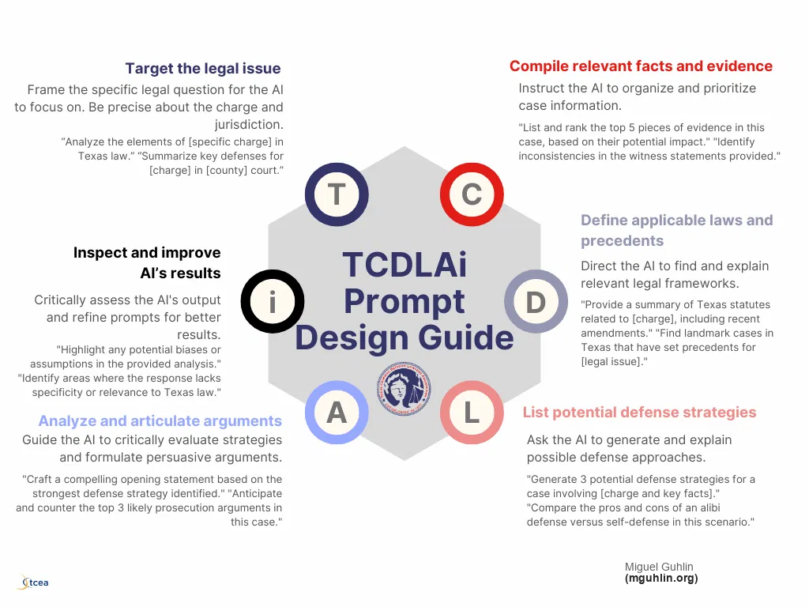
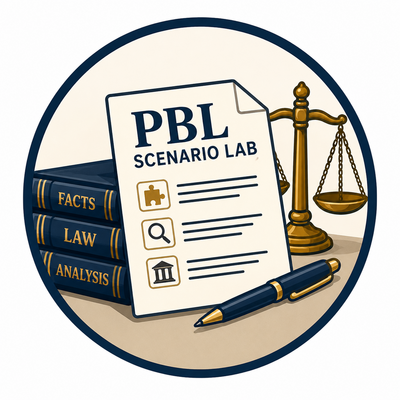

We just spent twenty minutes on why AI is risky. Now we spend twenty-five on how to make it far less so. This is the working heart of the session, and it is where you will do the most typing.
Three moves do most of the work. Give the model structure so it cannot wander. Ground it in sources you trust instead of its own memory. And verify what comes back before you rely on it.
We will build all three around a framework made for this audience, called TCDLAi. Let us start with why the way most people prompt makes things worse.
Today leans problem-based. We start from a defense problem worth solving, use AI toward it, and judge the result against the problem.
Before we touch a prompt, one choice shapes everything. There are two ways to bring AI into a practice, and they lead to very different results.
The use-case model, on the right, starts with what. You look for specific tasks that are repetitive, data-heavy, or generative, and you bank quick wins. Summarize a transcript, compare two plea offers, draft a client update. Useful, and a fine place to start.
The problem-based model, on the left, starts with why. You name a real pain point with real stakes, like the hours suppression motions eat and the sanctions a bad citation invites, and you aim AI at that. Bigger payoff, and it forces you to measure whether the tool actually helped.
Today we lean problem-based. We start from a defense problem worth solving, then judge the AI against it. Which brings us to why vague prompting is the enemy.
The link to ethics. The less you specify, the more the model invents. Structure is not about polish. It is about shrinking the room for fabrication.
Start with the root problem. Most people type something like write me a motion to suppress and hit enter. That single line has no issue, no facts, no court, and no sources. So the model does what it always does with a gap. It fills it, by inventing.
Here is the connection I want you to hold. The less you specify, the more the model has to make up. Vague prompting is not just a quality problem, it is an ethics problem, because invention is exactly the failure we are trying to avoid.
The fix on the right is not fancy. Name the issue, the facts, the jurisdiction, and the sources it must use. Tell it what it may not assume. Structure shrinks the room for fabrication, and that is why we lead with it.
Tell the model who to be. "Act as a Texas criminal defense attorney preparing for a suppression hearing."
Give the facts, the jurisdiction, and the constraints. The fictional stand-in facts go here.
State exactly what you want produced, and how long or detailed it should be.
Set the output shape, and add the guardrail. "Cite only sources I provide. Flag anything you are unsure of."
Few-shot boost. Add one or two short examples of the output you want. Examples steer the model harder than instructions alone.
Here is the foundation you can teach anyone in your office in five minutes. Four parts. Role, context, task, and format with limits.
Role tells the model who to be, which shapes its tone and focus. Context is where the facts, the jurisdiction, and the constraints live, and where your fictional stand-in facts go. Task states exactly what you want and how much of it. Format and limits set the shape and, most importantly, add the guardrail sentence. Cite only what I give you, and flag anything you are unsure about.
One more lever. Add a short example or two of the output you want. We call that few-shot prompting, and examples steer the model harder than instructions alone. Now let me show you how the same task improves across three tiers.
Task: identify defenses for a fictional driving-while-intoxicated stop.
The climb. Each tier adds role, then structure, then grounding and a verification flag. Risk falls at every step.
Let us make this concrete with one task climbing three tiers. The task is finding defenses for a fictional driving-while-intoxicated stop.
The good version is what most people type. What are some defenses to a DWI. You will get a generic list that may or may not fit Texas. The better version adds a role, the specific facts, a number, and a jurisdiction limit. Already much stronger. The best version adds the two moves that matter most for us. It grounds the model in sources you paste, and it tells the model to flag any angle those sources do not support.
Notice the climb. Role, then structure, then grounding plus a verification flag. Risk drops at every step. This progression is the spine of the framework we turn to now.

This is the TCDLAi Prompt Design Guide, and the name is the method. Six moves, one per letter, that walk a defense task from the raw legal issue all the way to a result you have checked.
Target the legal issue. Compile the relevant facts and evidence. Define the applicable laws and precedents. List potential defense strategies. Analyze and articulate the arguments. And the small i, which is the one people skip and the one that saves you, inspect and improve the AI's results.
You do not have to use all six every time. But when a task matters, running the letters in order keeps the model focused and keeps you in the driver's seat. Let us break the letters down.
Frame the precise legal question, charge, and jurisdiction for the model.
Give the model the facts and evidence to organize and prioritize.
Point it to the statutes and precedents it must work from, not its memory.
Ask for defense approaches, each tied to a fact and a basis.
Have it stress-test strategies and anticipate the prosecution.
Critically review, hunt bias and gaps, and refine. This step is yours.
Uppercase letters make the draft. The lowercase i is where the lawyer stays a lawyer.
Here are the six moves in order. Target the issue, so the model knows the exact question, charge, and court. Compile the facts, so it has your material to organize instead of guessing. Define the law, by pointing it at the statutes and cases it must use. List strategies, each tied to a fact and a basis. Analyze the arguments, stress-testing them and anticipating the other side.
Then the lowercase i, and I made it lowercase on purpose. Inspect and improve the results. Hunt for bias, for gaps, for anything that does not fit Texas law. The five uppercase letters make the draft. The lowercase i is where you stay a lawyer. Skip it and you are just forwarding a machine's guess. Run it and the tool becomes an assistant you supervise.
Retrieval-augmented generation, or grounding, means the model answers from documents you provide instead of its training memory. For defense work, that is the difference between a guess and a citation.
The model recalls a blurry average of everything it read. Citations may be invented, and Texas specifics blur into general law.
You paste or upload the statute, the opinion, or your own brief bank. The model quotes and cites from that, and you can check every line against the source.
Do it safely. Ground with public authorities and fictional or de-identified facts in consumer tools. Save real client files for tools with enterprise terms.
Now the technique that does the most to fight hallucination. It has a clumsy name, retrieval-augmented generation, so I just call it grounding. The idea is simple. Instead of letting the model answer from its blurry memory of everything it ever read, you give it the actual documents and tell it to answer from those.
Without grounding, the model recalls an average of the whole internet, and Texas specifics blur into general law. With grounding, you paste the statute, the opinion, or your own brief bank, and it quotes and cites from that. Now you can check every line against a source that is sitting right there.
Do it safely. In a consumer tool, ground with public authorities and fictional facts. Save real client material for tools with enterprise terms. This is the D in TCDLAi doing real work.
Run a grounded prompt and read the answer with its citations.
Open each cited authority yourself from a real database.
Confirm the quote, the holding, and the pinpoint actually appear.
Fix what fails, and record what you verified and how.
Let me show you the inspect step as a habit you can run every time. Four steps. Get the draft and read it. Pull each cited source yourself from a real database. Match the claim, confirming the quote and the holding and the pinpoint actually appear. Then correct what fails and note what you verified.
There is a nice trick on the screen. You can turn the model against its own work. Ask it to point to the exact sentence in your pasted source that supports each citation, and to remove any claim it cannot support. It will often catch its own inventions when you make it show its evidence.
That is not a substitute for your check. It is a first pass that makes your check faster. You still open the source. Now it is your turn to work.

Choose one of three fictional fact patterns, a DWI stop, a drug-possession search, or a disputed assault. Work it through the framework, moving from the good prompt to the best. Copy the ready-made prompts, run them in your chatbot, and inspect what comes back.
Name the issue and paste the fictional facts. No real client details.
Paste the provided statute excerpt. Ask for grounded strategies.
Stress-test one strategy, then run the inspect prompt to check it.
This is the main hands-on block, so let us give it room. Go to the resources page and open the PBL Scenario Lab. Pick one of three fictional fact patterns, a DWI stop, a drug-possession search, or a disputed assault. Choose the one closest to your practice.
Work it through the framework. Start with the good prompt, then climb to the best. The prompts are ready to copy, so you spend your time reading output, not typing. Paste the provided statute excerpt when you reach the define step, and finish by running the inspect prompt on one strategy.
Take about twelve minutes. When we regroup, rate the best-tier output zero to ten, and tell me what the inspect step caught that you would have missed. That last part is usually the moment it clicks. Go ahead.
Take your best grounded answer and try to make it fail. Ask a question the pasted statute does not cover, and watch whether the model admits the gap or invents a bridge. Then tighten your prompt until it stops guessing.
If we have the full ninety minutes, this optional round is worth it, because it teaches the limit of grounding. Take your best grounded answer and try to break it. Ask something the pasted statute does not actually cover, and watch closely. Does the model admit the source is silent, or does it quietly build a bridge and invent.
Then tighten your prompt until it stops guessing. A single line, only answer from the source and say if it is silent, changes the behavior dramatically.
The lesson is on the right. Grounding cuts risk sharply, but it does not remove it. A clean format is not proof. The inspect step is still yours to run. If we are tight on time, we skip this and go straight to takeaways.
You now have the moves. Segment three turns them into a checklist and a set of clear rules you can post by your desk.
Let us lock in the segment. Three habits shrink AI risk, and you just practiced all three. Structure, so the model has less room to invent. Grounding, so it answers from sources you trust instead of memory. And inspect, so every claim is checked against a real authority before you rely on it.
Those three, run together through TCDLAi, are most of what responsible AI use looks like day to day.
In the last segment we turn these habits into something you can actually keep. A short checklist, clear do-and-don't rules, and guidance on what to document. That is what makes this stick after you leave the room.